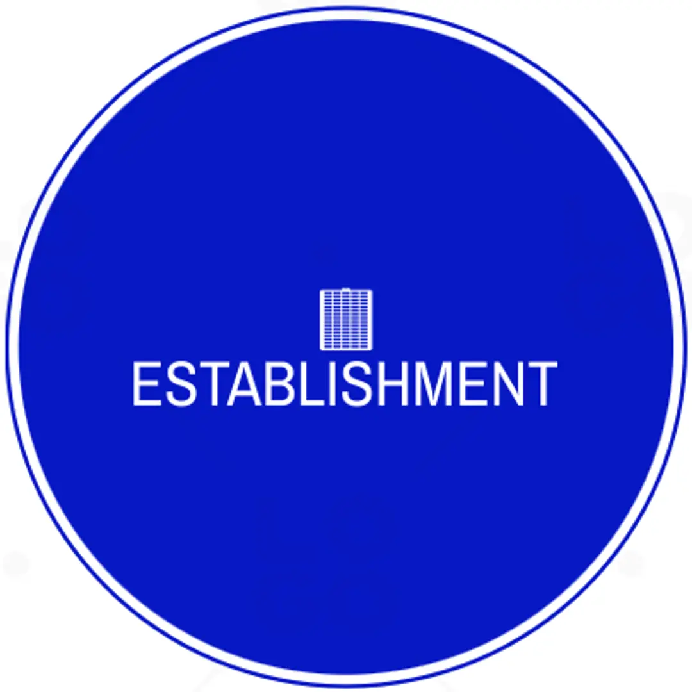

About
Who We Are
The WITS Old Mutual Insure Risk Lab is a pioneering research laboratory established through a partnership between the University of the Witwatersrand's School of Statistics and Actuarial Science and Old Mutual Insure. We are dedicated to producing impactful research tackling climate risk, infectious disease modelling, and sustainable insurance through advanced statistical and machine learning methods.
- Academic Rigour — Maintaining the highest standards in research methodology
- High Quality Research — Using mostly open-source tools for transparency
- Open Collaboration — Working across disciplines and institutions
- Industry Impact — Translating research into practical solutions
- Capacity Building — Training the next generation of quantitative researchers
Academic Excellence at WITS
Our lab is situated within the School of Statistics and Actuarial Science at WITS, one of the foremost institutions for statistical education in Africa. We combine rigorous academic training with hands-on industry exposure.
- Postgraduate research supervision at Honours, Masters and PhD level
- Industry-linked research projects with Old Mutual Insure
- Workshops and training programmes in R and modern analytics
- Building accessible computational tools for risk assessment
- Conference presentations and academic publications
- Cross-collaboration with international research groups
Lab History

EstablishmentPartnership Foundation
The Risk Lab was established through a strategic partnership between the University of the Witwatersrand's School of Statistics and Actuarial Science and Old Mutual Insure, recognising the need for dedicated research capacity in risk analytics.
Team Growth
Building Research Capacity
The lab includes leading researchers, lecturers, postdoctoral fellows, and talented postgraduate students, each contributing unique expertise in statistics, actuarial science, and machine learning.
Current Impact
Research & Outreach
Today the lab is building its research programme, with team members actively developing projects in climate risk, health statistics, and spatial modelling. We are growing our network of academic and industry partnerships across South Africa and beyond.